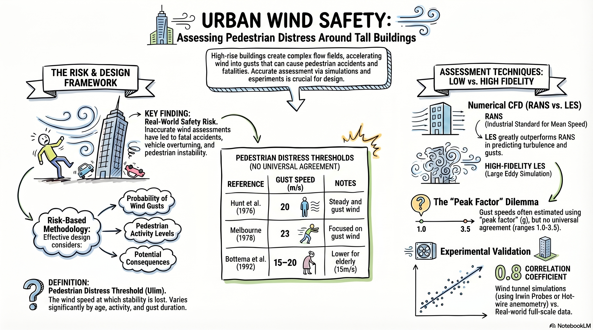

会議概要
作成日: 2026年4月15日
Title: On the assessment of pedestrian distress in urban winds
Authors: Giulio Vita, Zhenru Shu, Michael Jesson, Andrew Quinn, Hassan Hemida, Mark Sterling, Chris Baker
Affiliation: Department of Civil Engineering, University of Birmingham, Edgbaston, Birmingham, UK
DOI: https://doi.org/10.1016/j.jweia.2020.104200
Journal Name: Journal of Wind Engineering & Industrial Aerodynamics
Volume: 203
Pages: 104200
Year: 2020
都市風は、適切に評価されない場合、歩行者の安全に対するリスクを引き起こす可能性がある。高層建築物は地表レベルで複雑な流れ場を生み出し、そこでは加速流や再循環流の領域が存在する。突風風速は、非定常流によって歩行者が経験しうる最大速度の指標となる。本研究では、歩行者レベルの風を予測するための低忠実度および高忠実度の数値・実験手法を、暴風時のバーミンガム大学キャンパス内の現実的な実物大試験ルートで検証した。結果は、突風風速と乱流環境の間に直接的な対応関係が存在するため、シミュレーションの複雑さを高めることが有益であることを示している。Irwinプローブから熱線風速計へ切り替えても大きな改善は得られなかった一方で、LESはRANSを大きく上回り、信頼性の点で実験シミュレーションにも挑戦しうる性能を示した。さらに、ピークファクターの妥当性にも疑問が呈され、各手法の適切性について総合的な考察が行われている。
本研究は、都市部の歩行者安全環境評価における各種計測・シミュレーション手法の有効性を、実規模の観測データと比較することで検証しました。高層ビル周辺の複雑な風環境では、平均風速だけでなく突風の評価が不可欠であり、手法の選択が予測精度に直結することが示されました。特に高精度な数値シミュレーションであるLESの有用性が確認された一方で、従来の簡易的な予測手法やピークファクターの使用には注意が必要であることが結論付けられました。

04-14 講義：リスクベースの歩行者風環境評価、突風指標、およびCFD/風洞実験による検証
報告者: Ali Farvardin
本講義では、建物周辺の歩行者風環境におけるリスクベースの設計と評価について概説します。これは、2011年にリーズのブリッジウォーター・プレイスで発生し、多額の対策費用と2019年以降のロンドンおよびリーズでの厳格な微気候ガイドライン策定のきっかけとなりました。Baker (2015)の研究に基づき、有効風速、閾値超過確率、および年齢、活動、風の類型、突風持続時間によって異なる安全基準を用いて歩行者の不快感（distress）を定量化するループベースの手法を提示します。不快感の閾値とピークファクターは文献によって大きなばらつきがあり、突風持続時間（1秒、3秒、10秒）の標準化された定義と、時間スケールに明示的に関連付けられたパーセンタイルレベル（例：99%）の必要性が強調されました。
セッションでは、平均風速と突風特性を評価するための計測手法とシミュレーション手法の比較が行われました。アーウィン・プローブのような低忠実度ツールは、平均風速や長時間の突風の計測には実用的ですが、短時間の高周波変動の計測には限界があります。一方、超音波風速計、熱線風速計、LDA、PIVなどの高忠実度手法は、乱流や突風をより正確に捉えることができますが、熱線風速計（特にシングルワイヤー）は再循環領域での方向性の把握に課題があります。風洞実験のセットアップ（開放型、2×2m断面、14mテストセクション、最大風速12m/s）では、平坦および地形模型上でアーウィン・プローブ（~50Hz）、熱線（~1000Hz）、コブラ・プローブ（250Hz）が使用されました。1.2mと2mの間の高さ補正は無視できる程度でした。現地検証には、バーミンガム大学キャンパスでのストーム・オフィーリア（2017年）のデータが使用されました。32mのタワーにある10mマストをリファレンスとし、地上レベルに設置された8台の超音波風速計（サンプリング周波数10Hz）で計測されました。実規模のパワースペクトル密度（PSD）は-5/3の慣性小領域に従い、フォン・カルマン・スペクトルと一致しており、CFD比較のための忠実度が裏付けられました。
CFD研究では、計算領域の戦略（粗度フェッチを伴う切り出し領域、風洞全体、および導出された流入条件）と乱流モデルの評価が行われました。RANS（主にk–ω SST、他にk–ε、k–ω、SAとの比較）は概して平均速度を妥当に予測しましたが、乱流エネルギー（TKE）と散逸率（ε）を過小評価し、突風の表現には限界がありました。LES（切り出し領域での中解像度格子を用いたWMLES）は、変動、TKE、および散逸プロファイルをより良く再現し、高忠実度計測の結果と一致しました。流入風の生成と上流の発達が極めて重要であることが示されました。粗度を伴う切り出し領域では層流開始から乱流を発達させることができますが、特にRANSにおいて感度が高いままであることが確認されました。
歩行者ルートに沿った比較により、流れの特徴が明らかになりました。コーナー付近（地点1-2）での加速、それに続く剥離および再循環領域（地点3-6）です。LESは全8地点で平均風速と標準偏差の傾向を最もよく再現し、再循環による複雑な突風構造を捉えました。RANSは加速領域付近では許容範囲内の性能を示しましたが、下流の平均風速と変動を過小評価し、再循環や渦の「回り込み」の特徴を見逃しました。アーウィン・プローブは全体的な平均傾向と長時間の突風を追跡しましたが、高周波域では偏差が生じました。熱線風速計は高周波成分をより良く捉えましたが、センサーの指向性の限界により、強い方向性を持つ再循環領域では信頼性が低下しました。PSD解析により計測器の帯域幅の妥当性が明確になり、3秒および10秒の突風周波数との関連が示されました。
突風の推定は、高周波計測およびLESからの直接的な手法と、ピークファクターの関係式 UG = U + G × σU を用いた間接的な手法の両方で検討されました。実規模および実験結果から、Gは空間的および局所的な流れの条件によって変化し、加速された高平均風速エリアでは低くなり、平均風速は低いが乱流が強い場所では高くなる傾向があることが示されました。単一の普遍的なピークファクターの使用は不適切であり、Gは局所的なσu、TKE、および平均風速に依存させるべきです。空間解析の結果、突風のリスクは高平均風速ゾーンだけに限定されず、平均流が低い再循環領域でも高い突風性を示す可能性があることが示されました。風洞の平坦ベースと地形ベースの比較では、平均および突風指標の差はわずか（通常~3-15%）であり、実用上の観点からその後の解析を平坦ベースのデータに依拠することが正当化されました。
実務的には、高忠実度計測とLESが突風に関連する歩行者風環境評価において最も信頼できる基盤を提供しますが、リソースを多く消費します。RANSとアーウィン・プローブは、複雑な流れにおける変動の過小評価が知られているものの、コストや出現頻度の重み付けを伴う多風向評価の必要性から、依然として日常的な規制調査で主流となっています。講義では、変化する規制状況（AIJ関連基準やRANS/風洞の普及への言及を含む）に触れ、不確実性を管理するために、慎重なポスト処理、実規模イベントに対する厳格な検証、およびコンテキストに応じた閾値選択の重要性が強調されました。
本日は、都市部の風環境における歩行者の不快感評価についてお話しします。この論文は、英国のバーミンガム大学とイタリアのフィレンツェ大学の研究者によるものです。2011年3月頃にリーズで発生した事故をきっかけに、英国のビル周辺における歩行者の安全性の現実に対する意識が高まりました。
市内最高層のビルであるブリッジウォーター・プレイス付近で風況評価が不正確だったため、大型トラックが横転し、歩行者1名が死亡、もう1名が負傷しました。これにより、約90万ポンドを投じて複雑な風対策システムが構築されることになりました。その後、2019年以降のロンドン市およびリーズ市における「風の微気候ガイドライン」に適合することが、新たな開発には求められるようになりました。
ここでは、著者たちが2015年に発表されたBakerによるリスクベースの手法に基づいたフローチャートを提示しています。これは、風速が閾値を超える確率だけでなく、歩行者がどのように反応するかといったリスク分析に基づいた建物周辺の風環境設計を示しています。基本的にはループのような構造になっており、そのループを経て、風速に基づいた最終的な設計が決定されます。
歩行者の不快感基準は、通常、UEがU-limitより大きいといった式で定義されます。UEは有効風速、U-limitは不快感の閾値です。有効風速、そうですね。そして最終的に、超過確率Pmaxを定義できます。ここでUEとU-limitは、平均風速または突風速度に基づいています。
結果はその後、安全基準を用いて不快感の閾値またはU-limitと比較されます。この基準は、文献によって様々ですが、例えば高齢者の場合は低い不快感数値となる歩行者の年齢、歩行者の活動、風の類型（一様か非一様か、あるいは突風か）、そして突風の持続時間などに基づいています。ここで、表1は文献に見られる歩行者の安全基準の概要を示しています。
閾値が文献によって大きく異なっていることがわかります。これは、この分野でさらなる研究が必要であることを示唆しているのかもしれません。さて、突風速度（UG）は実験や数値シミュレーションから直接測定することもできますが、一般的には平均風速Uから間接的に評価され、UG = U + G × σUという式が用いられます。
σUは標準偏差、Gはピークファクターです。ピークファクターの値は、様々な文献に基づいて表2に示されています。ピークファクターが1というケースもあり、非常に低い値ですよね。単にσの1倍ということですか？そう、非常に小さいです。通常は、例えばガウス分布であれば、私の隣にいる方が詳しいと思いますが、σ、つまりピークファクターが3の場合、
パーセンテージはどのくらいになりますか？99%以上ですね。ええ、99%以上です。多くの場合、3以上、あるいはそれより高い値が使われます。論文ではこのピークファクターについて非常によく議論されています。非常に理にかなっています。2番目の著者は、東北大学の名誉教授ですね。さて、この論文の主な目的は、
歩行者レベルの風を評価するために使用される標準的な手法の効率を検証することです。歩行者レベルの風は、風洞実験やCFDを使用して評価できます。測定手法は大きく分けて、低忠実度と高忠実度の2つのバリエーションがあります。低忠実度は、アーウィン・プローブやRANSのように平均風速の推定に適しており、高忠実度は、熱線風速計のように変動、乱流、突風を捉えるのに適しています。
すべての測定手法がここに示されており、ハイライトしたものがこの論文で使用されているものです。低忠実度はアーウィン・プローブと3D U-RANS、高忠実度は超音波風速計、熱線風速計、そしてハイブリッドRANS/LESです。風洞実験では、標準的なツールであるアーウィン・プローブを用いてモデル上の選択された地点で風を測定します。これは使いやすく平均風速の測定には適していますが、短時間の突風のような変動を捉えるのは得意ではありません。
熱線風速計は乱流や変動に対してより正確ですが、流れの方向やプローブのセットアップに対してより敏感です。つまり、アーウィン・プローブは実用的で標準的なツールですが、熱線は変動を捉えるのにはるかに優れており、指向性があるため使用が難しいということです。アーウィン・プローブが何か知っていますか？少し太い形状のものです。ええ、ピトー管の一種のようなものです。圧力を測定するためのプローブに接続された非常に小さな管で、それを風速に変換します。
これまで聞いたことがなかったので、どのようなものか検索してみました。ピーター・アーウィンという人物を知っていますか？1930年か1940年頃の方だと思いますが、最近亡くなりました。彼は風工学のコンサルティング会社のオーナーでした。会社の名前は忘れましたが、風洞実験のコンサルティングを行っていました。
数値シミュレーションについては、RANSが標準的な低忠実度CFDモデルであり、平均風速には適していますが、突風や変動についてはそれほど正確ではありません。LESや、より高速なRANS/LES手法は乱流に対してはるかに優れています。しかし、より細かい格子が必要であり、計算コストと時間もかかります。これらのCFD手法の検証は、バーミンガム大学のキャンパスで行われました。
ストーム・オフィーリアは、2017年に発生した大規模な風のイベントで、英国とアイルランド共和国で甚大な被害と負傷者を出しました。本研究では、ストーム・オフィーリアの発生期間中の14:10から16:30頃までに測定されたデータを使用しています。風向は南南西（SSW）でした。リファレンスとなる風速計は、32メートルの高さのタワーにある10メートルのマストに恒久的に設置されています。
こちらのマップで見ることができます。基本的にこれがバイオサイエンスビルで、ここが歩行者レベルのテストに使用している通りです。そしてこれがタワーで、このタワーの頂上での風速をリファレンスとして使用しました。左の写真はキャンパスのマップで、ストームがこの角度からキャンパスにやってきたことを示しており、右の写真は歩行者レベルの測定に使用された8台の超音波風速計とその設置位置、特にバイオサイエンスビルの基部付近のエリアを示しています。
いくつかの建物がこの付近にあり、ストームはこの方向からやってきました。リファレンスおよび歩行者レベルの風速計は、どちらも10Hzのサンプリングレートで3次元速度を記録するように設定されました。センサーはこれらの地点に設置されたのですか？はい、8地点です。非常に近いですね。なぜそうしたのでしょうか？建物の最も近い側から5メートルから9メートルの範囲に設置されています。
建物から5メートル。この距離が5メートル、そうですね。間隔は9メートルです。さて、ここで、13:10から16:30までの10分間の窓で測定された平均速度と風向が示されています。基本的に10分間の期間が14回あり、風速が非常に高いことがわかります。
平均風速10メートル毎秒、10分平均ですね。10メートル毎秒というのは、あなたのデータと比較すると、かなり高いですよね？ええ。もちろん変動はありますが、平均がこれほど高いのは一般的ではありません。歩行者レベルでは最大5メートルほどです。風洞実験で使用されたリファレンス風速、モデルの頂上での流入風速にはコブラ・プローブが使用され、歩行者レベルの測定にはアーウィン・プローブと熱線風速計が使用されました。
彼らの風洞は開放型で、2×2メートルの作業断面、14メートルの長さ、最大風速12メートル毎秒の性能を持っています。平坦なベースと地形ベースの2つのタイプでテストを行い、これがそのデータです。
コブラ・プローブについては250Hzのリファレンス速度、アーウィン・プローブは約50Hz、熱線は1000Hzです。追加のテストにより、1.2メートルと2メートルの間の差は無視できることがわかったため、高さ補正が適用されました。サンプリング時間は、実規模では1時間でしたが、風洞実験では36秒が使用されました。さて、この図は、タワーでの実規模リファレンス測定のパワースペクトル密度（PSD）を示しています。
スペクトルは古典的な-5/3の傾向に従っており、フォン・カルマンのパターンとも非常によく一致しています。これにより、ストーム・イベントのリファレンス・データが現実的な乱流構造を持っていたことがわかり、後のCFDとの比較がはるかに容易になります。ここで、左側には平均風速と乱流強度の垂直プロファイルが見られ、
右側には測定されたリファレンス風速のPSDが見られます。さて、これが数値計算のセットアップです。図8は、本研究で使用された3つの代替CFDドメインを示しています。Aは「切り出しドメイン（truncated domain）」です。12列の粗度ブロックを用いて、短縮されたフェーズ上で乱流が生成されます。
Bは「全ドメイン（whole domain）」で、風洞のフェッチ全体がモデル化され、流入風がより完全に発達します。Cは「導出ドメイン（derivative domain）」で、上流のフェッチは取り除かれ、乱流流入プロファイルが入念に直接課されます。これら3つのドメインは、物理的なリアリズムと計算コストの異なるバランスを代表しています。図9はメッシュ解像度を示しています。ここでは、すべての数値計算ケースの技術的な概要がまとめられています。
RANSについては3つのドメイン戦略をテストしましたが、LES（図中ではalias）は最終的に切り出しドメインのみで実行されました。メッシュ感度解析の後、メインのLESケースとして中解像度の格子が選択されました。基本的にRANSでは3つのドメインすべてを行いましたが、LESではこれだけを使用したということです。表にあるWMLESの意味を確認できますか？
ウォール・モデル（Wall Model）です。なるほど。さて、ここではLESの結果に対するメッシュ独立性の検討が見られます。下が平均速度、上が標準偏差です。8つの地点すべてで非常によい一致が見られます。
RANSについて、主に使用された乱流モデルはk-omega SSTでした。これは、剥離やブラフボディ周辺の伴流予測に優れているためです。図11は、k-epsilonとk-omegaを使用しても、予測結果に無視できるほどの差しかないことを示しています。
RANSシミュレーションのSAモデルとはどういう意味でしたか？ええ、確認したかったのですが確信が持てませんでした。SA、正確な名前はわかりませんが。標準的な？標準、そう、イン・アンド・アウト・アンド・スタンダード。ああ、スパラルタン、スパラルタン（Spalart-Allmaras）ですね。
K-Epsilonに非常に近いタイプのモデルですね。さて、前述の通り、著者たちは異なるCFDセットアップを比較して、流入する大気流をどの程度再現できるかを確認しました。ここでは、左から平均風速、乱流エネルギー、そして乱流散逸率、
最後がリファレンス風速です。RANSについては、少なくとも全ドメインのRANS-W、導出ドメインのRANS-D、そして基本的なRANSは、実験と比較して非常に良い結果を出しています。しかし、乱流エネルギー（K）については、
特にRANSではあまり良い結果が得られていません。しかし、流入については、LESが良い結果を出しています。散逸についても同様にLESは良い結果ですが、RANSはそれほどではありません。これは流入部分ですね。なぜプロファイルを与えなかったのでしょうか？
通常、RANSシミュレーションではプロファイルを与えます。直接観測された値を与えます。RANSではこれら3つのうちの1つを使用したということですが、流入プロファイルのことですか？これら3つのプログラムをすべて使用したということですね。流入なしで？
層流が与えられたということでしょうか、少し奇妙ですね。なぜそうしたのかわかりません。実務的な部分と非常に異なっていますよね？ええ、非常に奇妙です。また、Kについても、なぜこのような結果になるのかわかりません。LESでさえ大きく外れています。
ああ、なるほど。プレカーサードメインの下流、フェッチ上で発達させた後ですね。流入生成の感度を層流を与えることで確認するのが目的なのでしょうか。わかりません、非常に奇妙な疑問です。さて、ここで突風の推定手法が見られます。1つ目は間接的な手法で、RANSに使用されます。
基本的には突風率（ガストファクター）を使用します。そして2つ目が直接的な手法で、風洞実験やLESに使用されます。突風の持続時間は1秒、3秒、10秒でした。結果に移りましょう。なぜ99%を選択したのか、またなぜその突風持続時間を選択したのかについての言及はありましたか？はい、現在、どのガストファクターが直接的な手法と比較するのに最も適しているかを確認しているところです。
しかし、それさえも、例えば98%や90%といったパーセンタイルの定義に大きく依存しますよね？また、タイムスケールや突風持続時間も重要で、意図的に変更しているのかもしれません。ええ、そうですね。少なくとも、彼らはランダムに選択したようです。
彼らは99%または90%の値を決定しようとしています。しかし、その値がどれほど重要なのかが不明確なのが問題です。どのパーセンタイルを使用すべきか、ということですね。彼らのケースでは、ランダムに選択されただけです。さて、結果に進みましょう。ここでは、実規模測定に対する実験および数値計算の平均風速が示されています。すべての手法の平均風速を実規模と比較しています。アーウィン・プローブは全体的な傾向は捉えていますが、地点2以降で過大評価しています。
熱線は非常に良い一致を示していますが、地点3付近以降で少し過小評価しています。LESは非常によい一致ですが、やはり少し過小評価しています。地点2以降、RANSは使用された3つのモデルすべてで基本的にすべてを過小評価していますが、地点2付近では非常に良い予測をしています。
この写真では、流れの方向は下から上ですね。ここから流れの方向が見えます。Uはこちらから来ます。この図は流れのパターンと、前の図の説明を示しています。最初の明確な違いは地点2付近で、ここで加速されたジェット流が発生しています。RANSはこのエリアも過小評価しています。
他に大きく異なるエリアは4と5の付近で、再循環領域において基本的なRANSは突風の回り込みや再循環を全く予測できていません。さて、これは風速の標準偏差を示しており、歩行者ルートに沿って各手法がどの程度乱流環境を捉えているかを示しています。アーウィン・プローブは最初の2地点で過大評価し、その後は少し過小評価しています。
熱線測定は、全般的に標準偏差を過小評価しており、特に剥離流領域では性能が低いです。RANSはすべて強く過小評価しています。RANSが変動の予測には信頼できないことを示しています。LESははるかに優れた性能を示し、全体的に最も近い一致を見せています。ここで標準偏差の分布図が見られます。
明らかにRANSはこの部分で良い予測ができていません。平均流の分布よりも差がはるかに大きいです。LESでは地点1で加速領域が見られ、地点2で風速が低下します。RANSはこれらを全く予測できていません。基本的には下流で高い加速領域を示しているだけです。
地点3から8のすべての地点で、RANSはすべてを過小評価しています。図17は、地点2における熱線とアーウィン・プローブのパワースペクトル密度（PSD）を比較しています。垂直線は10秒と3秒に対応する周波数を示しています。熱線は高周波の変動をはるかに良く捉えていますが、アーウィン・プローブは
3秒以下の周波数ですでに大きく外れています。これは、アーウィン・プローブがより長い持続時間の大きな突風には適しているかもしれないことを示しており、そのためこの論文では小さな突風に対してこれらのエリアでアーウィン・プローブを使用していません。さて、この図は、すべてのケースにおける1秒、3秒、10秒の3つの突風持続時間についての突風速度を比較しています。
最も強い突風は地点2で発生しています。アーウィン・プローブの結果は図10のみに示されています。これら2つについては結果がありません。熱線測定は、特に地点1から4の最高風速域で実規模データとよく一致していますが、再循環領域では性能が低下します。LESは全体的に最良の一致を示し、RANSは
地点1と2の付近で辛うじて妥当な性能を示しますが、それ以降は強く過小評価しています。周波数はどのくらいですか？10Hz未満、たぶん10Hzくらいだったと思います。10秒が最大ですよね。高周波は捉えられていません。周波数は10Hzではないですよね？0.1Hz、あるいは1/10でしょうか。
ここですね。ええ、およそ10Hzくらいです。nで正規化されていますが、10秒の突風だと書いてあった記憶があります。そうですね、おそらく5Hzくらいまででしょう。さて、この図は建物周辺の空間的な突風速度パターンを示しています。左側はRANSで、
3.5のピークファクター式を使用して直接得られたものです。右側はLESで、99パーセンタイルの値です。どちらの手法も、流れが加速する建物の角に近い地点1と2で最も強い突風が発生することを示しています。しかし、LESは、地点4、5、6周辺の再循環領域における顕著な突風性を含む、より豊かな突風構造を明らかにしています。これは、突風のリスクが平均流の最も強い領域だけに限定されず、平均流が低い再循環領域でも高い突風性を示す可能性があることを示しており、LESの使用を支持しています。
さて、図20は、実規模、熱線、LES、アーウィン・プローブのデータから得られたピークファクターGを比較しています。重要なのは、ピークファクターが歩行者ルートに沿って一定ではないということです。実規模データでは、Gは約
2.7から3.5になり、その後再び2.7の範囲に落ちます。熱線についても、2.5付近から地点によっては4まで上がり、その後下がっています。つまり、これは単一の普遍的なピークファクターがすべての局所的な流況に適切ではないことを示しています。アーウィン・プローブは高風速域ではかなり正確ですが、熱線は
再循環領域で強く過大評価しており、LESが最も一貫した挙動を示しています。図21は、平均風速、1秒突風、3秒突風について、平坦ベースと地形ベースの熱線テストを比較しています。論文では、平均1秒風速で約15%、平均3秒突風で11%の差が報告されていますが、これはこのキャンパスの実規模データのばらつきに比べれば小さいと考えられます。
風洞モデルはそれほど大きく変わりませんでした。そのため、論文の次の結果では平坦ベースの結果が使用されています。ここで、著者たちは図22で乱流強度を提示していると言っていますが、なぜかプロットが示されていません。図21と全く同じ図が示されており、どちらも風速を使用しているため、乱流強度のプロットがありません。
重複してしまっていますね。地形ケースというのは、表面の状態が平坦ではなく、建物の表面だけでなく、丘の起伏などが正確に再現されているということですね。平坦ケースは単に平らな面に建物が存在している状態です。結論としては、地形はあまり影響しないということですか？
ここではそうですね。彼らは乱流強度について話していますが、プロットが示されていません。前の図と同じプロットになっています。同じ図ですね。ミスでしょう。でも少なくとも表5はあるので、そこから見ることができます。非常にわずかな差ですよね、5%くらい？
3%から最大15%くらいです。さて、最後の図はキャンパス内の主要な流れの物理現象をまとめています。表6は全体的な性能ランキングを示しています。興味深いのは、標準偏差について、すべての結果が低いということです。実験も数値計算も
相関係数が低いと言えます。最も重要な教訓としては、歩行者の安全には突風と乱流が大きく関わっていること、アーウィン・プローブは特に単純で長時間の評価には依然として有用であること、熱線はより良い突風情報を提供しますが常に大差があるわけではないこと、そしていつものようにLESはより信頼性が高く、変動と乱流を捉えることができ、ピークファクターは定数として扱うべきではないこと、平均風速が低い伴流領域でもリスクがある可能性があること、などが挙げられます。
ありがとうございました。今回も、LESがRANSより優れているということがよくわかりました。それが常に言及されるキーメッセージですね。これは非常に大きなグループです。クリス・ベイカーは風工学の先駆的な人物です。マーク・スターリングにも会いましたね。植生キャノピーの研究もしていました。
ハッサン・ヘミダもバーミンガムの主要な人物です。筆頭著者は2023年に卒業した若い方ですね。2番目の著者のShunsheng Luは、現在はHandling Editorを務めています。
何が起きたんですか？ああ、彼ですね。今はJWIEAのHandling Editorです。卒業生ですね。
なるほど。大きなグループの成果ですね。英国の何らかの委員会のメンバーかもしれません。データ分析と結論は非常に明快でシンプルですね。分布にガストファクターを掛けて一定値にする手法などと比較しても。
また、ミスで図が重複していたりもしましたね。なぜこれが受理されたのか不思議な部分もありますが、実務的なプログラムにこれらの手法をどのように実装するかという点では非常に有用です。個人的に興味深かったのは、ピークファクターの分布との比較です。平均風速とピークファクターの関係について何か気づいたことはありますか？
例えば、ピークファクターの分布図を見せてもらえますか。一般的にピークファクターは平均風速と関連がありますが、ピークファクターが大きくなる場所と小さくなる場所の傾向はどうなっていますか。
平均風速とピークファクターですね。正確な関係はわかりませんが、傾向は似ているように見えます。風速が小さい場所では、通常、ピークファクターは大きくなります。そう、これですね。逆の傾向です。地点1と2では風速が大きいですが、ピークファクターは少し小さいですよね。
風速が小さいと、ピークファクターは非常に大きくなることがあります。つまり、平均風速が分布の中心であり、ピークファクターはその分布の裾がどのくらい長いかを表しています。平均風速が十分に大きい場合、平均に対する分布の範囲は相対的に小さくなります。地点によって異なるピークファクターを使用する必要があるということですね。
ええ、あるいはKBモデルのようなモデルを使用する必要があります。なぜ定数を使用してはいけないのか、わかりますか？同じシミュレーション内で異なるピークファクターを使用するオプションはありますか？
変えるべきですね。多くの場合、一定であるという仮定がなされますが。私の論文を読んでください。彼は、乱流エネルギーと平均風速の関数としてピークファクターの分布関数をどのようにモデル化できるかについて、多くの論文を出版しています。ピークファクターはそれらの関数であるべきです。つまり、σuやUが異なれば、ピークファクターも異なるべきだということです。
それが一点。もう一点は、すでに言及しましたが、彼らが99%のピークファクターモデルを比較したことは興味深いですね。パーセンタイル値と標準偏差の関連性を示すことは、実務的に非常に興味深く、理解を助けます。さて、何か質問やコメントはありますか？
平坦と地形で結果を比較していますが、地点1と2はもともと建物に影響されますが、最後の6地点は一直線上にありますよね。再循環領域のことですか？それらは地形の影響をあまり受けないはずなので、平坦と地形で差が小さいのではないでしょうか。地点1と2で差が見られるのはそのためだと思います。
1と2では差が大きいですね。ええ、地形の影響を受けやすい場所だからでしょう。実際、別の場所にもセンサーを設置すべきだったかもしれません。例えば、このあたりのエリアなど。どこですか？ここです。メインストリートのあたりにも設置できたはずです。彼らは1つしか使っていません。
バスと通りの違いについても言及していましたね。なるほど、設置場所が限られているというコメントですね。地形の影響を受けにくい6地点のデータを平均してしまっていると。その結論はあまり...
地勢を設置した際、歩行者の高さをどのように定義したのか気になります。実際の地表面に依存するはずです。平坦なら常に最低部からの高さは同じですが、地勢がある場合、建物はその上にあり、歩行者の高さはその地勢の表面から定義されます。
正しいですか？地勢ケースと平坦ケースで実際の物理的な高さが異なるということですか？建物からの高さは同じですよね？床からの高さです。ええ。ただ、接近流のプロファイルが異なりますよね。風洞やCFDドメインで物理的な高さが異なれば、高さも変わるはずです。急勾配であれば異なりますよね。
他に質問は？RANSについて質問があります。一般的に、平均風速はRANSでもうまく再現できると思うのですが、なぜここではこれほど差があるのでしょうか。
地点1と2の近くではRANSは非常に良いですが、その後は大幅に過小評価しています。なぜかは正確にはわかりません。平均風速でこれほど差が出るべきではないのですが。ピークファクターのせいかもしれませんが、確信はありません。
彼らはピークファクター3.5を使用しています。基本的に、風速が大きい場合はRANSでシミュレーションしやすいです。ピークが大きい場所、つまり風速が小さい場所は、RANSにとっては常に困難な領域です。
わかりました。実際のアプリケーションで、正確なデータが必要な場合に、RANSを使用している人はいるのでしょうか。実務的な評価では、依然としてRANSが主要な手法です。LESは実務ではまだ一般的ではありません。
RANSの結果は信頼できるのでしょうか？すべてを過小評価しているのに、どのように使用するのですか？それが重要な点です。また、LESを使用してすべてのデータセットを蓄積し統計を計算するのは、実務的にはほぼ不可能です。RANSは非常に迅速でシンプルです。
実際の風環境評価の手順では、16風向を考慮する必要があります。それぞれの風向の出現頻度を計算し、平均を算出します。つまり、少なくとも16ケースを走らせる必要があります。LESでそれをやるのは大変です。
そのため、RANSを使用するのが一般的です。私は現在、日本建築学会の風環境評価基準の委員を務めていますが、そこで日本の各自治体の規制を確認しています。30から40以上の自治体に規制があり、CFDや風洞実験について言及されています。CFDといえばLESではなくRANSシミュレーションを指すのが一般的です。
非常に実用的で一般的です。なぜ熱線風速計（HWA）は地点4以降でも精度を維持できているのでしょうか？もう一度お願いします。地点4以降、熱線風速計の方が精度が高いのはなぜですか？
精度が低いのか、高いのかどちらですか？地点4以降、精度が低いと言っているのですか？なぜでしょうか。
再循環領域に入ると、多くの渦が発生し、熱線の指向性が非常に重要になります。熱線をどの方向に向けるかが結果に大きく影響します。そのため、地点4、5、6あたりでは、熱線の結果は実規模測定とあまり一致しなくなります。
指向性は非常に重要ですね。どのようなタイプの熱線を使用したのでしょうか、I型ですか？論文に書いてありましたが、ここには持ってきていません。3次元の速度成分は検出できるのでしょうか。
熱線では検出できません。通常はシングルワイヤーです。一本のワイヤーで、そこを通過する風速を検出します。厳密な風速ベクトルではなく、あくまで一本のワイヤーに対するものです。
熱線で検出できるのは、流れの方向が反転した場合などに区別ができないといった問題もあります。風向によってセンサーの応答が異なるため、3成分が混ざったような値になります。
風向が明確であれば一方向を無視できますが。彼らはLDAやPIVについても言及していましたが、それらはさらに困難でしょう。RVセンサーなら多くの地点に同時に設置できます。
熱線は一種のプロブなので、動かす必要があります。LDAも同様で、測定点にレーザーを当てる必要があり、動かす必要があります。
他に質問はありますか？トムさんは？いいえ、大丈夫です。図15と16について少し。図15から、RANSの標準偏差は常に他より低いことがわかります。
しかし図16を見ると、特に地点1と2で、RANSの結果が他より大きく見えます。大きいですね。また、大きいだけでなく、地点2を認識できていません。地点1は加速領域、地点2は低風速領域ですが、RANSは両方で高い値を出しています。
ところで、あのU字型の建物は何ですか？非常に面白い形ですが。これですか？いいえ、これです。薄い建物に見えますが。写真を見てみましょう。
これですね。歩道のような構造物ですね。壁があるのかもしれません。全般的にLESの方がはるかに実規模に近い結果を出しています。
ただ、風洞実験の結果も、実規模測定と100%一致しているわけではありません。図13を見てみましょう。これは平均風速の結果ですか？
はい。質問は、実規模測定とLESや風洞実験の差についてですか？風洞と実規模の差ですね。平均風速については、少なくとも私にはほぼ同じに見えます。突風ですね。突風、わかりました。ガストファクターが関係していますね。
地点4.3や4での熱線の結果などについてですね。論文では、再循環領域における熱線の効率について言及されています。指向性が重要になるため、再循環領域では熱線の扱いは難しくなります。
風洞実験の結果は、実験値なので信頼できるはずですが、風洞と実規模はどちらも現実の現象ですが、背景条件が全く異なります。屋外は一定時間のアンサンブル平均です。10分間のセグメントに分けていますが、背景の風速や風向は一定ではありません。
一方、風洞では風向も平均風速も一定です。変動しません。そのため、風洞と実規模測定で結果が異なることはあり得ます。ただ、これらは非常に似た条件下にあります。地点1と2などは非常に一致していますが、3と4は再循環の影響でセンサーの設置状況などが影響しているのかもしれません。
実規模のリファレンス速度は2倍ですね。実規模を再現するのは非常に困難です。
流入風について、たとえLESで完璧な流入風が得られなくても、下流のデータは信頼できると著者たちは言っています。なぜそう言えるのかはわかりませんが、彼らはそう主張しています。
実際の風速で正規化しても、これはレイノルズ数依存性の話になります。正規化すれば値は同じになるはずです。10メートル毎秒と5メートル毎秒でも。さて、他に質問がなければ、Slackを見てください。
内容は新しかったですか？質問は？ないですね。
どのくらい理解できましたか？50%くらい？10%とは言わないでくださいね。ブックマークを見てください。学生のために内容を理解できるように準備しています。
これは自動翻訳ですが、会話の内容を参照するのに役立つはずです。学習に役立ててください。また、発表者の方は、最後に私のコメントを残しています。
発表が良かったかどうか、コメントを残しています。音声も録音しているので、文字起こしが間違っている部分もあるかもしれませんが、会議の雰囲気を理解するのに役立つはずです。復習に使ってください。さて、次の発表者は？リュウ君ですか？
酒井君はどうしますか？来週戻ってくると言っていましたね。突然そう言われました。次の会議は火曜日です。ノーベル賞受賞者が来るイベントがあるそうですね。
10:30から午後4時までイベントがあるそうです。午前と午後の二部制だとか。
では、来週は一回休みにして、28日にしましょう。進捗報告は各自、週の間に個別に行ってください。西尾君、若田君、いいですね？28日午後1時です。
酒井君にお願いしましょう。ありがとうございました。この後、学生の進捗報告を行います。一人ずつ来てください。報告がない場合も、現在の状況を共有してください。
ありがとうございました。
歩行者高さ風速の評価方法，ガストの評価方法，RANS-LESでの推定制度に関する論文
報告者: Ali Farvardin
風環境評価における強風（ガスト）の評価方法を屋外観測とLES，RANSで比較した論文．ガストの評価には，1秒、3秒10秒の移動平均を取った時系列出たを対象として99%タイル風速を，ピークファクターを一定としたRANSの推定値，LESで直接推定したもの，屋外観測のデータから直接ついて，風洞実験で、アーウィンセンサーと熱線流速計を使った結果，のそれぞれを比較し，屋外観測のピークファクターを表現するのに、熱線粒子系リースが乱数よりも優れていることを示したという結果．
特に屋外観測の実測データを比較しているところがとても貴重な絶ただったと思いますが，RANSののドメインの設定と、LSの流入の設定が若干よくわからない設定になっていました．特に流入風はかなり実験と違うものを入れていて，屋外観測の結果を再現できないのは当然のように思いました．
Aliでは、プレゼンテーションがとても上手で、多くの研究のサマリーが含まれている論文だったと思いますが、大変なくレビューされていたと思います．学生からの人はも大変多く良かったと思いますが，質問しなかった学生は、次に必ず質問を準備してきましょう．